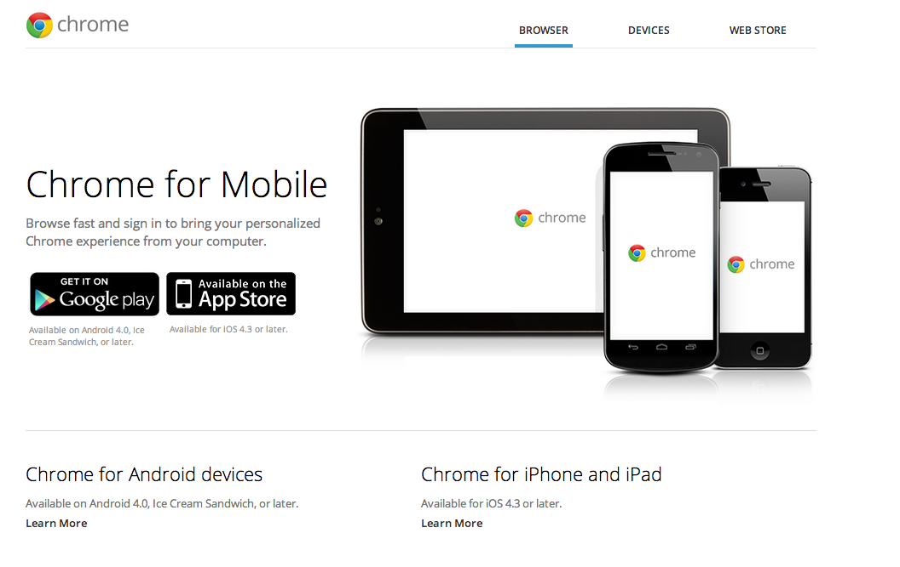
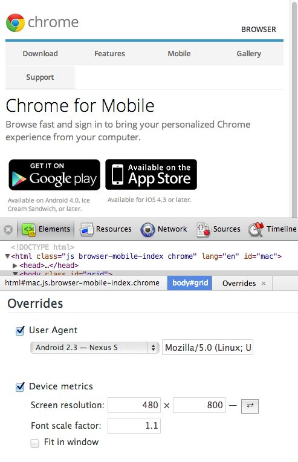
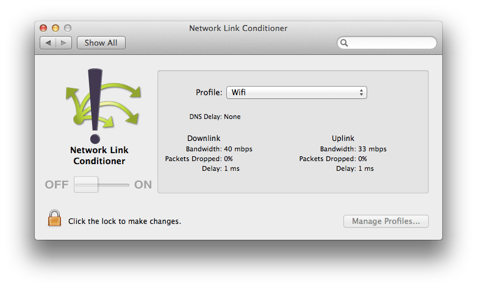
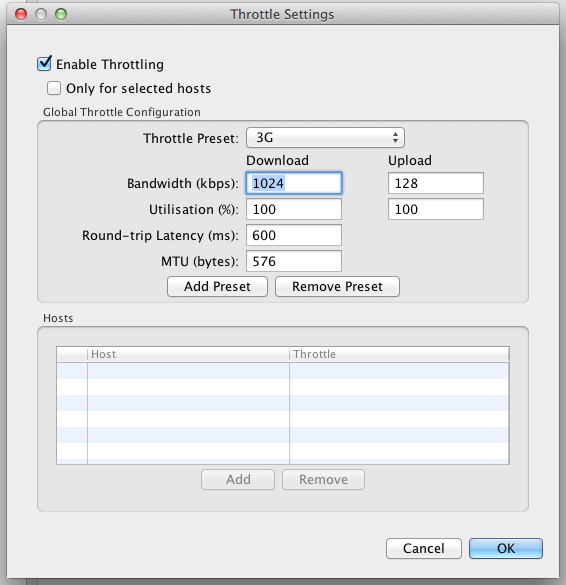
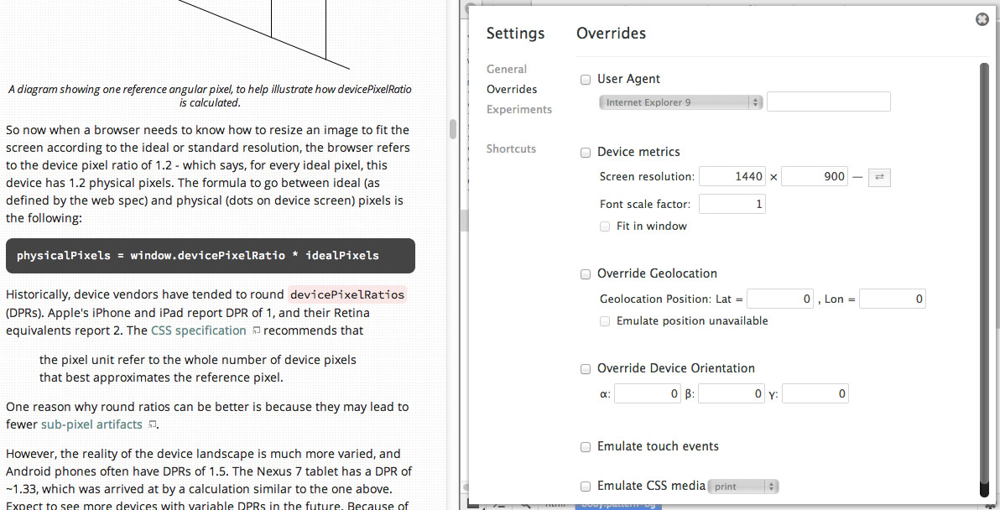
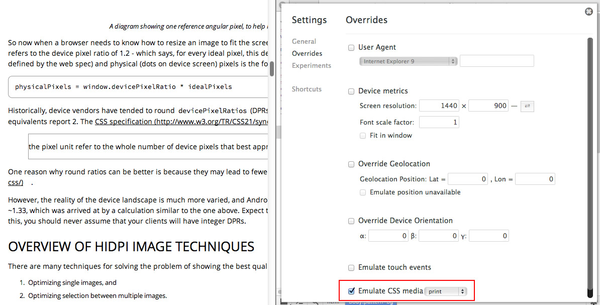

Contents
- Emulating Touch Events
- Emulating Device Viewports
- Useragent Spoofing
- Network Bandwidth Throttling
- Geolocation Overrides
- Device Orientation Overrides
- CSS Media Type Emulation
- Frequently Asked Questions
The mobile web has evolved to enable increasingly sophisticated applications, which we often wish to debug during development on the desktop. The DevTools include support for a number of features that can help with this which we will walk through in this section.
Note: Some of our documentation may be ahead of the stable version of Chrome. If you are unable to locate a feature listed, we recommend trying Chrome Canary which contains the latest version of the DevTools.
Emulating Touch Events
Touch is an input method that's difficult to test on the desktop, since most desktops don't have touch input. Having to test on mobile can lengthen your development cycle, since every change you make needs to be pushed out to a server and then loaded on the device.
A solution to this problem is to simulate touch events on your development machine. For single-touches, the Chrome DevTools supports single touch event emulation to make it easier to debug mobile applications on the desktop.
To enable support for touch event emulation:
- Click on the Settings cog
 and open up the Overrides panel
and open up the Overrides panel - Scroll down and check "Enable touch events"
- Reload your page
Your mouse actions will now also trigger the relevant touch events: touchstart, touchmove and touchend.
Notes
- Feature detects such as
Modernizr.touchwill now succeed on page refresh. - This feature, like many other overrides, will only work while the DevTools are open.
- The cursor will change to a small circle, to emulate a fingertip size.
- Enabling "Emulate touch events" does not disable mouse events entirely, as they are fired on touch devices. Try this touch event listener test page. touch as another option we can debug with.
- On click, the order of events fired is currently:
touchstart > mousedown > touchmove > touchend > mouseup > click. On touch devices, this order is slightly different. The tools will shortly be updated with the right order. -
elem.ontouch*handlers will currently not fire with this feature. Use the--touch-eventscommand line flag to let Chrome trigger these handlers.
Debugging touch events
- Open up the Canvas Fingerpaint Demo
- Navigate to the Sources panel
- Expand the "Event Listener Breakpoints" sub-panel
- Check the "touchstart" and "touchmove" events under "Touch"
- Move your cursor over the paint area
- The debugger should successfully pause on the draw() method
monitorEvents from the command line API:
monitorEvents(document.body, 'touch')Multi-touch
Multi-touch events can be simulated if you have a device with touch input, such as a modern Apple MacBook. For further assistance with multi-touch event simulation, see the "Developer tools" chapter of the Multi-touch web development guide on HTML5 Rocks.
Emulating Device Viewports
It's often easier to start prototyping on the desktop and then tackle the mobile-specific parts on the devices you intend to support. Device emulation can make this process more straightforward.
The DevTools support for device emulation includes native User Agent and dimension overriding. This allows you to emulate and debug mobile viewport issues like CSS media query breakpoints for various devices and settings.
Changing the user agent will prefill the device metrics values with the device pixel sizes of those devices. For example, selecting the Nexus S will prefix a resolution of 480x800.
Notes
- The button following the Screen resolution values () will swap the width and height.
- At present, Font scale factor will only set the text zoom. There are however plans to change this in the future to better emulate mobile devices using text autosizing and real device pixel ratio emulation. Until then, the current state will never be 100% accurate and may exhibit some visual artifacts and unexpected behavior when scaling the page.
- Fit in window will rescale the area available to the page to exclude the area occupied by the DevTools. This may be useful if your page now descends below the bottom of the DevTools, though keep in mind this will scale the page metrics.
- Device media queries (e.g
@media only screen and (min-device-width:768px){}) will be enabled according to the values defined here. There is presently no other way those can be mimicked. - You may want to undock DevTools or dock it to the right while working with emulated viewport settings.
- Currently, setting device metrics will not emulate the behavior specified in a
<meta name="viewport">tag or (@viewport { … }rule). You can run Chrome with additional flags to emulate mobile viewport behavior:
Chrome --force-compositing-mode --enable-threaded-compositing --enable-pinch --enable-viewport --enable-fixed-layout
Useragent Spoofing
Emulating The User Agent
- Navigate to the Chrome for mobile homepage
- Open up the Overrides menu in the DevTools
- Check "User Agent"
- Select "Android 2.3 - Nexus S"
The result is that first, the User Agent string for the current page changes to Android 2.3. Next, the Device Metrics option has been automatically enabled and the Screen resolution and Font scale factor fields set to those emulating the chosen device.
| Before: | After: |
|---|---|
|  |  |
Notes
- If you would like to contribute patches to support new device presets, please see our contribution docs.
Network Bandwidth Throttling
The DevTools don't currently support network throttling, however it's important to understand and test the impact of slower connections on your site.
On Mac, we recommend using the Network Link Conditioner that is available via X Code. It has presets for network conditions like EDGE, 3G, DSL, WiFi, High Latency DNS, Very Bad Network, and 100% Loss. Changes made within Network Link Conditioner will affect all system network traffic, including Chrome or any running emulators and simulators.
On Windows, we recommend using Charles Proxy. Whereas Network Link Conditioner will affect all system traffic, you can set Charles as a proxy for specific application and only affect their traffic. Do note that a proxy may change network behavior and performance characteristics beyond just the bandwidth speed.
On Linux, there are many options for traffic shaping; trickle is a recommended option.
Geolocation Overrides
When working with HTML5 geolocation support in an application, it can be useful to debug the output received when using different values for longitude and latitude. The DevTools support both overriding position values for navigator.geolocation and simulating geolocation not being available via the Overrides menu.
Overriding geolocation positions
- Navigate to the Geolocation demo
- Allow the page access to your position. This should hopefully be accurate.
- Open up the Overrides menu in the DevTools
- Check "Override Geolocation" then enter in Lat = 41.4949819 and Lat = -0.1461206
- Refresh the page. The demo will now use your overridden positions for geolocation
- Now check the "Emulate position unavailable" option
- Refresh the page. The demo will now inform you that finding your location failed
Device Orientation Overrides
Many new mobile devices are now shipping with accelerometers, gyroscopes, compasses and other hardware designed to determine capture motion and orientation data. Many web browsers access to that new hardware, such as via the HTML5 DeviceOrientation events. These events provide developers with information about the orientation, motion and acceleration of the device.
If your application is taking advantage of device orientation events, it can also be useful to override the values received by these events during debugging to avoid the need to test them on a physical mobile device.
Overriding orientation values
- Navigate to the Device Orientation demo
- You should see a standard HTML5 logo along with the current orientation values listed above it
- Open up the Overrides menu in the DevTools
- Check "Override Device Orientation"
- You will see three fields:
- α: how much the device has been rotated around the z-axis
- β: how much the device is tilted left-to-right
- γ: how much it's tilted front-to-back.
- Change the values to the following:
- α - 0
- β - 60
- γ - 60
We have altered the left/right tilt and front/back tilt, in this case resulting in our application being emulated as rotating in a clockwise direction.
CSS Media Type Emulation
CSS media types allow us to apply different styles to a page depending on the medium it is being used through (e.g print, screen, tv, braille and so on).
Emulating media types
- Navigate to HTML5 Rocks
- Open up the Overrides menu in the DevTools
- Enable "Emulate CSS media" and select the "print" media type option from the drop-down box.
- The page will adjust to using a stylesheet for the chosen CSS media type if one is available
| Before: | After: |
|---|---|
|  |  |
Frequently Asked Questions
Q: Do the DevTools support remote debugging?
A: Yes. Please see our remote debugging
documentation for more information.
Q: Can the DevTools emulate lower GPU memory limits or slower CPUs, as found on mobile devices?
A: Currently there is no means within DevTools or Chrome to emulate these characteristics.